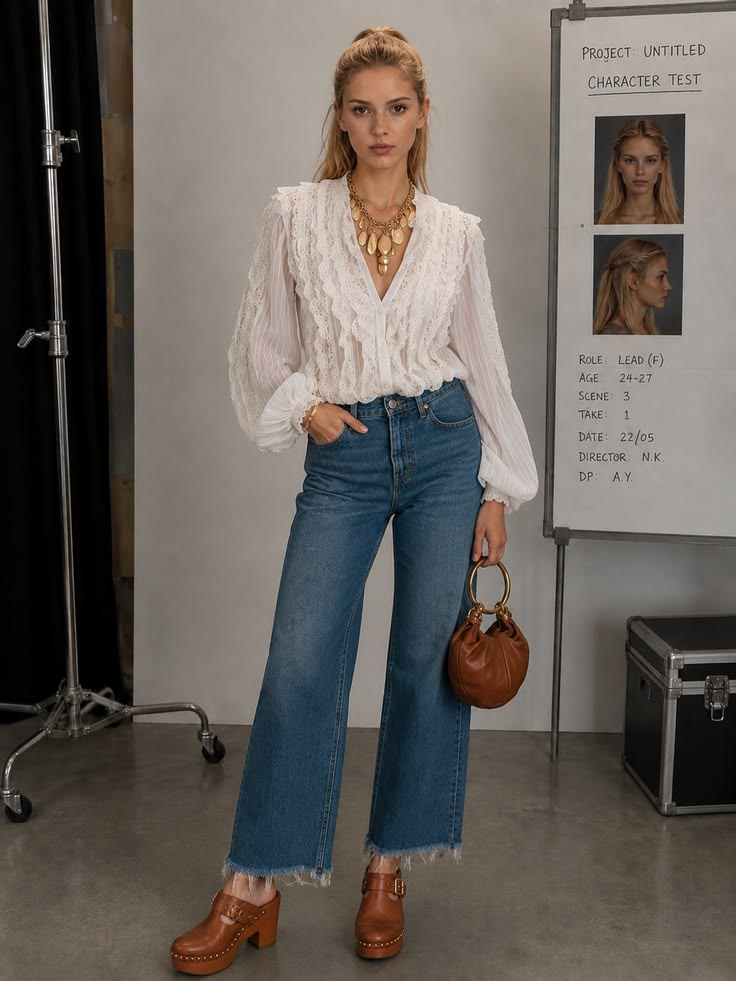
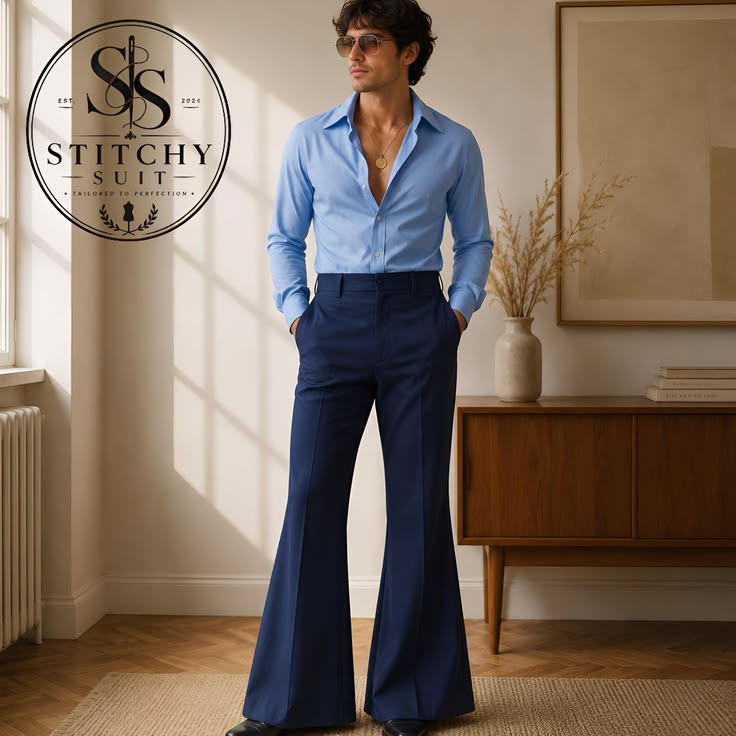
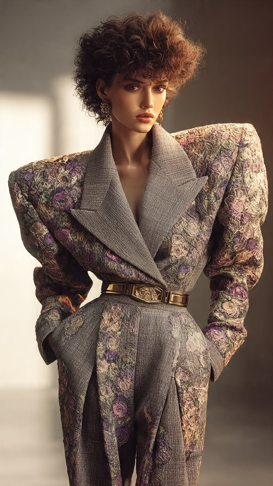
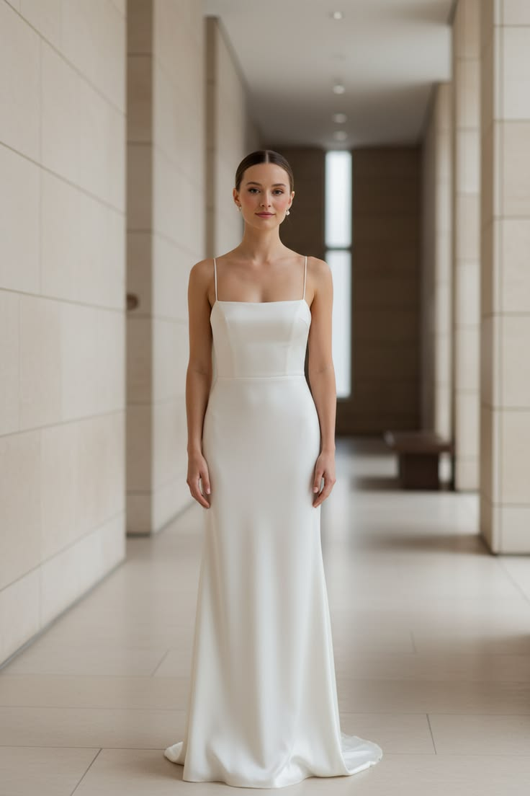
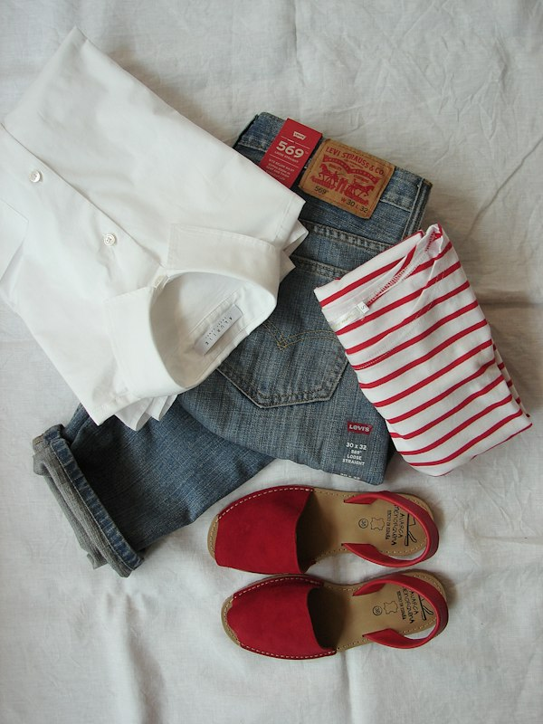
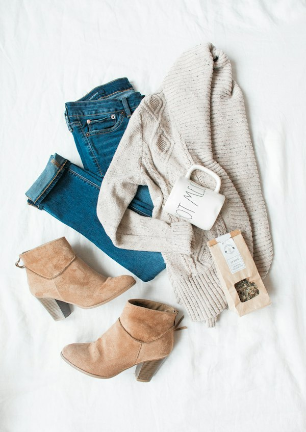
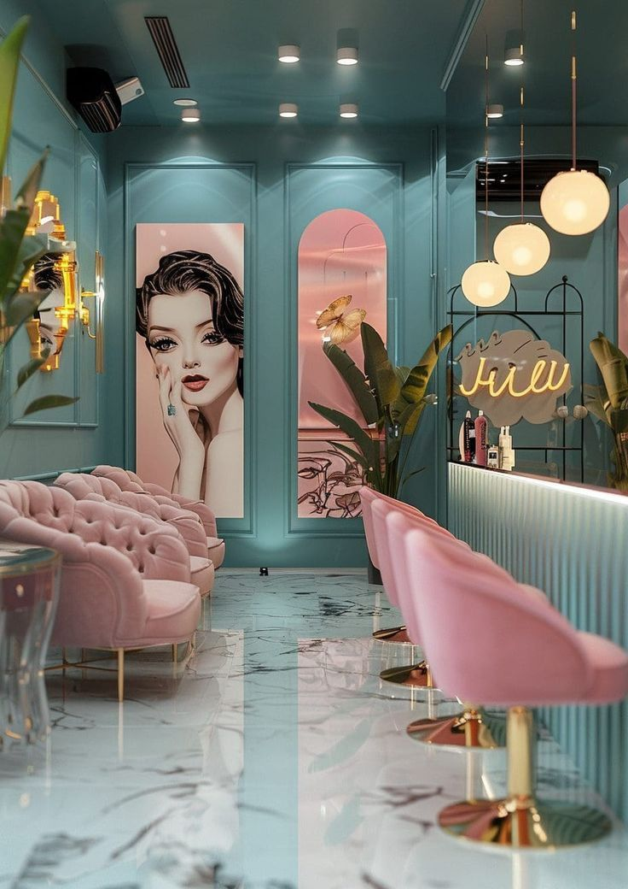

Wear the Past With Contemporary Ease.
Vintage fashion isn't theatrical costume. It’s the art of tension: pairing heavy heritage workwear with modern tailoring, or fluid 70s silks with everyday denim.
The Three Foundational Pairings
How our stylists build memorable looks using deliberate contrasts between rugged and delicate textures.

Rigid Selvedge × Fluid French Silk
Tuck an ethereal 1970s floral silk blouse into structured 14oz non-stretch 501 jeans. The roughness of heavy warp denim grounds the feminine drape, creating effortless everyday elegance.
Oversized Biker Leather × Minimal Slip
Layer a heavy 1980s steerhide moto jacket with padded drop shoulders over a fragile 1990s bias-cut silk slip dress. The architectural armor of leather creates striking high-fashion tension.
1970s Rich Velvet × Crisp White Poplin
Rich cotton velvet absorbs ambient light while crisp poplin reflects it. Pair a tailored velvet dinner jacket with modern straight trousers and unbuttoned shirting for relaxed salon flair.
Decade Silhouettes & How to Balance Them
Understanding garment architecture by era helps you flatter your natural body geometry without looking like a period costume.

30 / 70 ProportionsThe Elongated Flare
High natural waist paired with a progressive knee break creates extreme vertical length. Keep tops tucked tight to honor the waistline.

Inverted TriangleThe Power Shoulder
Broadened shoulders taper sharply to a cinched waist. Pair boxy blazers with slim cigarette pants or cycling shorts to maintain balanced poise.

Monolithic VerticalThe Minimalist Column
Unbroken vertical continuity through maxi lengths, straight slips, and flat shoes. Focus on pure fabric drape with minimal accessory interference.
The Vintage Care Wardrobe Manual
Vintage garments were constructed without fragile modern plastics and synthetic binders. Care for them properly, and they will outlive another century.
Boar Bristle Brushing & Cedar Aeration
Harsh chemical solvents strip natural lanolin from virgin wool yarns. Outdoor aeration and natural animal fibers preserve structural resilience.
Cold Tub Immersion & Inverted Cuffs
Vintage shuttle-loom cotton tightens organically when hydrated correctly. Protecting indigo patina prevents unnatural high-contrast fading.
Botanical Steam & Distance Sanitation
Direct heat from metallic irons permanently crushes the microscopic filaments of mulberry silk, causing irreversible glazed scarring.
The Essential Vintage Capsule
How five archival foundation garments produce a cohesive year-round wardrobe.
The Atelier Trench & Knit
1980s wool coat over ribbed turtleneck and high-rise straight denim.
Structured Blazer & 501s
Relaxed houndstooth blazer paired with faded stonewash denim and loafers.

The Double-Breasted Layer
Tailored gabardine coat worn over bias-cut silk slip and heeled leather boots.

The Silk Scarf - Accents
Vintage Italian printed silk scarf knotted over chunky cable wool sweater.

Curate Your Personal Silhouette.
Unsure which decade suits your proportions? Book a private 45-minute styling consultation in our velvet salon parlor. Includes personalized wardrobe pulling and analog vinyl fitting.